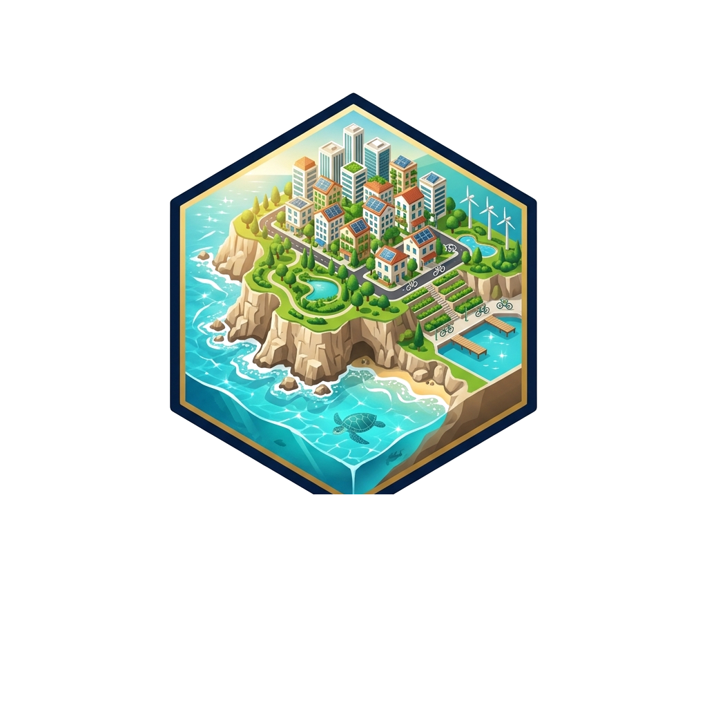

Fırtına öncesi dalgalar kıyıya katı atık yığdı. Yağışta denize karışma riski yüksek!
Güneş enerjili otonom katamaran körfeze açılarak denizdeki varil ve plastik atıkları süpürür.
Belediye çöp kamyonu ve 2 temizlik görevlisi caddedeki tüm çöp torbalarını teker teker kamyona atar.
Sedum bitki çatılı çok katlı konut.
İklim Dirençli Akdeniz Şehircilik ve Kriz Yönetimi Oyunu
"Yıl 2031. Antalya Belediye Başkanı olarak göreve başladınız! Elimizde küçük bir sahil yerleşimi ve çevreyi kirleten eski beton tesisler var. Kışın caddeleri dolduran ani seller, yazın ise 45°C sıcak dalgaları kapıda. Şehri büyütürken doğayı ve Akdeniz'i korumak sizin elinizde."
Sağanak yağışta önce caddeler suyla dolar ve şehre taşar. Mazgal ve Yağmur Bahçeleri kurarak taşkını emdirin.
Aşırı sıcakta klimalar trafoları patlatır. Güneş Tarlası ve Ağaçlı Bulvar ile şehri serinletin, eski tesisleri yıkın.
Toplanmayan çöpler mazgalları tıkar ve denize akar. Ayrıştırma Tesisi ve İleri Arıtma ile Konyaaltı'nı tertemiz tutun.
Tebrikler Mimar! Antalya'yı dünyanın ilk tam dirençli Ekolojik Metropolü haline getirdiniz. Eski fosil/beton tesisleri ıslah ettiniz, karbon ayak izini %0 Net-Zero seviyesine indirdiniz ve aşırı hava olaylarını %100 kentsel dirençle savuşturdunuz.